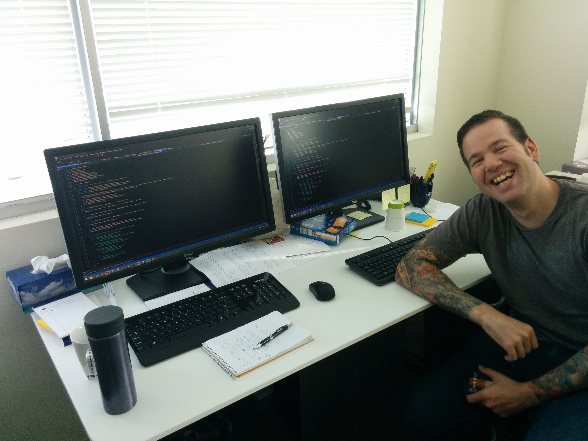

Note: This is part one of a three part series. You can find part 2 and part 3 here.
At the time of writing this post, I have about 3.5 years of experience as a professional software developer. For the majority of my career, I have worked in places that have done pair programming, or pairing. Overall, I have had positive experiences with pairing. I wish to speak about my experiences with pair programming, explaining some of the benefits and difficulties that come with the practice.
What is pair programming?
Pair programming is when two developers actively work together on writing a piece of software at the same time. Pairing can be done with two developers sitting at the same physical location, or it can be done remotely. Pair programming yields a number of great benefits, including real-time code reviews and increased knowledge transfer.
Pair switching
When developers pair program, the same developers don't stay together all the time (unless the team consists of two developers). By switching pairs, developers get to work with everybody else on the team and get exposed to other work. My experience with pair switching has been the following:
Devs A and B have been working on task 1 and Devs C and D have been working on task 2. The pairs have worked on their respective tasks for one pairing session, which lasts for a given period of time that is agreed upon by the team. I have had pairing sessions last for a whole day, a half day, or two hours. After a session, the pairs will switch up. Devs A and C will work on task 1 and devs B and D will work on task 2. Dev A brings Dev C up to task on the work that has been done by devs A and B. Dev D will bring Dev B up to speed on what has been done by devs C and D for task 2.
The devs will pair for another session. Afterward, the developer who most recently came onto the task will stay on while the other person switches off. Because Dev A was on task 1 longer than Dev C, Dev A will switch off and Dev C will bring Dev D up to speed on task 1.
This is just an example of how to pair switch. Sometimes the same people will end up pairing together often or certain people will gravitate toward certain tasks. I think it's good to work with everyone on your team and get exposed to a variety of work.
The driver and navigator roles
While pairing, at any given time, one developer plays the role of driver. This is the person actually writing code. Their concern is with the immediate task at hand.
The other developer plays the role of navigator. The navigator keeps a higher level picture of the work in their head. They think about the current task as well as what has been done and what has yet to be done. During a pairing session, developers will frequently exchange these roles.
The odd person
When you have an odd number of developers on your team, there will be a person left over after devs pair up. This person is referred to the "odd person." At one job, we didn't allow the odd person to push any production code without someone else reviewing it. Obviously, you can't just have a dev sitting around doing nothing. In my experience, this person usually worked on investigations or tooling for the team. In other places, the odd person was allowed to push production code as long as it was code reviewed by somebody else.
Setting up an environment conducive to effective pairing
In order to pair effectively, developers need to have the proper environment set up. This means having both 1) a physical environment (chairs, desks, keyboards, mice, etc.) and 2) a development environment (IDEs, editors, tools, etc.) where both developers can work comfortably.
The desk
First, let's talk about the desk. Physical comfort is important. The developers should be able to sit at the desk comfortably without getting in each other's space. Wide rectangular desks work well. I have had the displeasure of pairing at L-shaped corner desks. They are horrible. One person sits comfortably in the middle of the L while the other person has to sit uncomfortably at the edge of the L at an angle to the desk. It's the worst.
In my experience, the desk has a monitor, mouse, and keyboard for each developer. The desk should be large enough so that all of these things can fit comfortably.
Each dev having their own monitor, mouse, and keyboard allows them to easily jump in and contribute. I have heard of places where the keyboard, mouse, and monitor are shared, but I have not worked that way personally. I have also heard of places that will have the monitors face opposite directions, resulting in the developers facing each other. I hear this lends to having better conversations, but again, I don't have any personal experience with this.
 My pairing desk at eMoney along with my coworker Dan Donahue
Machines
At my current job, I have my machine. I log into it with my credentials and I'm responsible for what happens with that machine.
I dislike this. It encourages thinking in terms of the individual instead of in terms of the pair. Or in terms of the team, for that matter.
At my previous job, I had my own network account, but my team had a set of team machines. On each machine, we created a local team account with the proper permissions to get work done. We agreed as a team on a particular setup for the machines so that no matter what machine you worked on, it was indistinguishable from any of the other machines.
Having machines with the same setup saves a lot of headaches because you don't have to worry about which tools, packages, etc. are installed on a given machine. Another advantage of having team machines is that if a pair ends the day in the middle of work that is not ready to be committed, it's easy to jump back into it the next day and not have to worry about things like if a member of the pair will be out the next day.
Tools
When devs pair, they'll be using the same tools. Examples of tools are text editors, IDEs, plugins, and keyboard configurations. It's best to come to some sort of agreement on which tools to use. I've been on teams that come of with working agreements for tools and it worked out well when the team members respect the working agreements.
Going back to the comfort motif, make sure to decide on tools that most, if not all, members of the team are comfortable using. Because I'm such a nice dude, I'm willing to concede on certain things to make the other person more comfortable. For example, I like to use the VSVim plugin for Visual Studio. I pair with people who dislike using vim, so I'll disable the plugin when I pair with them as to not hamper their productivity. While I feel vim is great for text editing (and you should totally use it!), I can get by without it.
Part 2
In part 2 I talk about the benefits of pair programming.